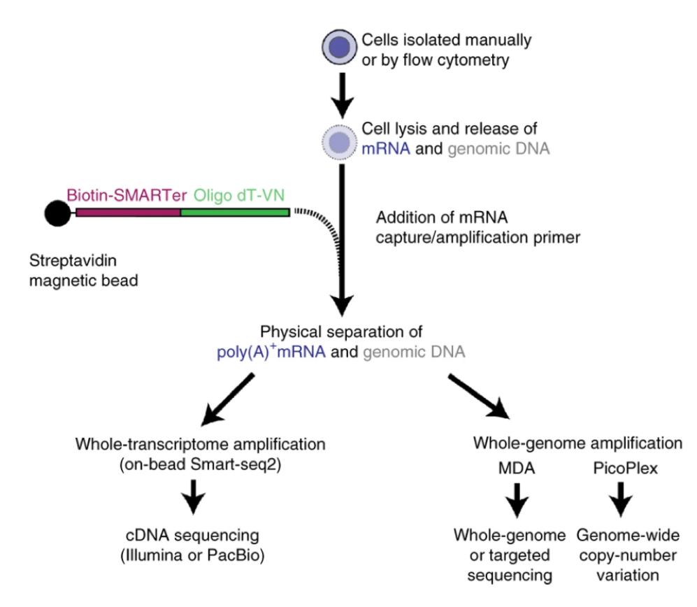

The genome and transcriptome sequencing (G&T-seq) uses oligo-dT beads to physically separate mRNA and gDNA from single celss. For mRNA-seq, it uses the SMART-seq method to construct sequencing library; for gDNA, you can choose MALBAC, LIANTI or other methods to construct gDNA sequencing library. Click the links to those methods to see how exactly libraries are made.
